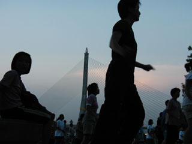
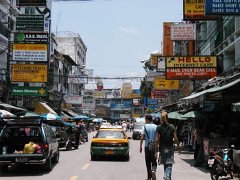
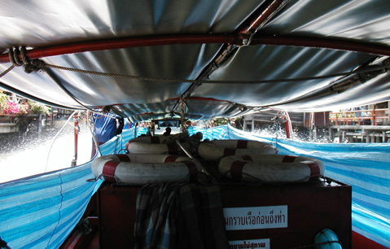

Thailand Trav-E-Logs©
| First Days
19 April 2003 |
 |
| back: Airports | Aerobics at Santichaiprakan Park, Banglamphu |
 My first morning in Bangkok, and I want to walk around a bit. As I make my way over to Khao San road, that area of Bangkok where all the backpacker back-up services are offered, I check out a place advertising "room available". Power outlet in the room, 2nd floor, the fan is silent, and 40 baht less per day. I move to the "New 99," next to "The Hole in the Wall".
When arriving in S.E.Asia, my general plan was to immediately go to Cambodia to see the temple complex at Angkor because the southwestern monsoon, which starts in May, brings much rain to this part of S.E.Asia. As I dug deeper into the Lonely Planet guide, I realized that visas are not always available at border crossings. It is safest, and often cheaper to acquire them before arriving at the border. So, my first full day in Bangkok is spent not only moving, but collecting information on embassy locations, hours, trip planning and scheduling, getting visa photos, and visiting visa service agencies. The best deal I found was at Linda's Travel, offering visas for Cambodia, Vietnam, and Lao in 5-business days for 3400 baht. That's an $85 shocker! To make matters even worse, the visa for Vietnam must include entry date, so I had to guess how long I want to stay in Cambodia. I read that the temple complex at Angkor is spread out over 75 square miles, I want to visit the capital, the beach, and maybe the northeast tribes, so I figure 16 days after arriving in Cambodia puts me entering Vietnam approximately May 12th. And by then we should know more about SARS.
Still not quite used to the heat and humidity -- this is the hottest month of the year, with temperatures hovering near 40. Don't feel like eating much, but in the evening I decide to grab a bite to eat at a sidewalk stand that appears rather popular with the local folks.
Now that I've spent a night in the new guesthouse, I'm a little concerned about what I saw last night in the streets below. While looking for an Internet cafe, I must have been approached a half dozen times by pimps and prostitutes. Very loud music, lewd gestures, and tons of drinking were the norm on the streets. Reminds me of what the Bali bombing in Kuta was all about from the Muslim radical standpoint.
How do you tell a good place to eat in a foreign country? Easy you look for a place that is crowded with locals. And you try to figure out what they are eating, and you try the same. Still works. I met a guy at one of those places last night, and we started talking. He's a Canadian by the name of Mark from Montreal. Retired civil engineer, he spends the winter months traveling, often through Bangkok. He's a warehouse of knowledge. Tells me of a huge computer complex not far from here, called Panthip Plaza. He is purchasing many DVDs for his library, and will be returning there tomorrow. We agree to meet mid-morning.
One of the nicest ways to travel in Bangkok is on fast boats plying the canals. It's 7 baht each way, there's no congestion, traffic lights, the air movement means no air conditioning is necessary, and the boats really move fast. The computer complex, taking up all six floors of a modern department store-like building, is like a computer show in the U.S., with many vendors competing for business. The most remarkable part was I found no hardware cheaper here than available at a computer show in California. Some items were considerably more expensive. Only illegitimate software was a "bargain", at $3 to $4 a CD. After we walked around for a couple of hours, mark purchased another bundle of CDs. Before heading back to Thanon Khao San via canal boat, we also looked at a lot of clothing. I'm interested in replacing my lightweight rain jacket, shoe laces, and I'd like to find a non-leather belt. No luck yet.
Each evening Mark walks down to the Santichaiprakan Park at the River's edge to watch more than 200 folks doing high-impact aerobics to a BIG sound system. A suspension bridge in the background at sunset makes for another photo opportunity.
19 April 2003
A lazy day indeed. Back spasms have kept me moving very slowly, and I finally succumb to the bottle for muscle relaxant/pain killer from my small stash of meds. In the evening, I work with a young gentleman running an Internet cafe that appears to be rather savvy with WindowsXP. We end up downloading a new driver for my laptop's built-in network card. For the first time, I'm on a cafe's network with my laptop. They get the rest of my business.
Bill
------------------------------"Travel is Fatal to Bigotry, Prejudice, and Narrow-minded ness" .... attributed to Mark Twain
| next: Bangkok 1 |
| back: Airports |